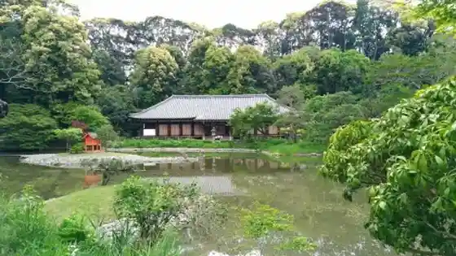
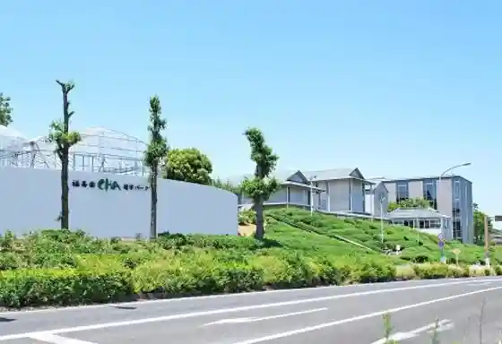
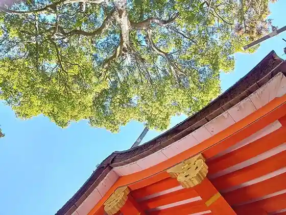
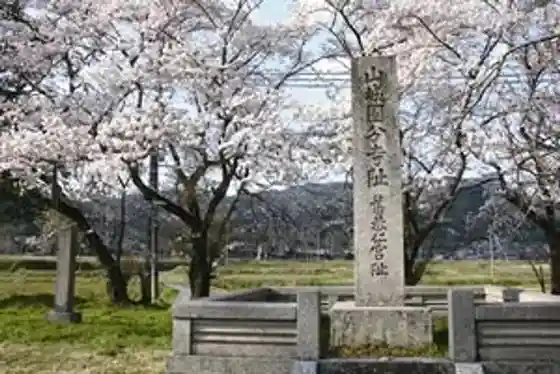

Fukuju Sono Yamashiro Kan
Kizugawa, Kyoto · 080-6551-4293 · Official / source link
Joruri Tera
Kizugawa, Kyoto · 0774-76-2390 · Official / source link

Fukuju Sono CHA Yugaku Park
Kizugawa, Kyoto · 0774-73-1200 · Official / source link

Okada Kamo Shrine
Kizugawa, Kyoto · 0774-76-3131 · Official / source link

Tokubetsu Shiseki Kuni Kyuseki (Yamashiro Kokubunji Ato)
Kizugawa, Kyoto · 0774-39-8191 · Official / source link

Yamashiro Town Forest Park (Resutovirejji Yamashiro)
Kizugawa, Kyoto · 0774-86-4507 · Official / source link
Kizzu Hikari Science Museum Foton
Kizugawa, Kyoto · 0774-71-3180 · Official / source link
JUNOPARK
Kizugawa, Kyoto · Official / source link
Umi Sumiyama Tera
Kizugawa, Kyoto · 0774-76-2256 · Official / source link
Iwafune Tera
Kizugawa, Kyoto · 0774-76-3390 · Official / source link
Yasuragi Taun Yamashiro Puru
Kizugawa, Kyoto · 0774-86-2010 · Official / source link
Yushutsu Miya
Kizugawa, Kyoto · 0774-86-2639 · Official / source link
Kani Man Tera
Kizugawa, Kyoto · 0774-86-2577 · Official / source link
Ue Koma Eki Higashikoen Tenisukoto
Kizugawa, Kyoto · 0774-86-5851 · Official / source link
Kizugawa Kamo Bunka Center (Ajisai Horu)
Kizugawa, Kyoto · 0774-76-4611 · Official / source link
Fudo Kawa Park
Kizugawa, Kyoto · 0774-86-5851 · Official / source link
Yamashiro Sogo Bunka Center Asupia Yamashiro
Kizugawa, Kyoto · 0774-86-5851 · Official / source link
Senkyo Tera
Kizugawa, Kyoto · 0774-86-2426 · Official / source link
Takada Tera
Kizugawa, Kyoto · 0774-76-3682 · Official / source link
Ippan Shadanhojin Kizugawa Tourism Association
Kizugawa, Kyoto · 0774-39-8191 · Official / source link
Soraku Shrine
Kizugawa, Kyoto · 0774-39-8191 · Official / source link
Fudo Sensa Bo Rekishi Park
Kizugawa, Kyoto · Official / source link
Kuni no Miya Gakushu Kan (Kizugawa Bunkazai Seiri Hokan Center)
Kizugawa, Kyoto · 0774-76-9202 · Official / source link
Shindo Tera
Kizugawa, Kyoto · 0774-86-2161 · Official / source link
Tsubai Otsuka Yama Burial Mound
Kizugawa, Kyoto · Official / source link
Taichi Tera
Kizugawa, Kyoto · 0774-72-2500 · Official / source link
Sen Tsukasa Iseki
Kizugawa, Kyoto · 0774-39-8191 · Official / source link
Furusato Museum Yamashiro (Kyotofuritsu Yamashiro Local History Museum)
Kizugawa, Kyoto · 0774-86-5199 · Official / source link
National Kenkyukaihatsu Hojin Ryoshi Kagakugijutsu Kenkyukaihatsukiko Kansai Koryo Ko Kagakukenkyujo
Kizugawa, Kyoto · 0774-85-2914 · Official / source link
Sainen Tera
Kizugawa, Kyoto · 0774-72-0175 · Official / source link
Kamitsu Iseki
Kizugawa, Kyoto · 0774-39-8191 · Official / source link
Tono Shuhen
Kizugawa, Kyoto · Official / source link
Sobo Gorin to
Kizugawa, Kyoto · 0774-39-8191 · Official / source link
Tenjin Sha Jusan Omoshi to
Kizugawa, Kyoto · 0774-39-8191 · Official / source link
Korai Jiseki
Kizugawa, Kyoto · 0774-39-8191 · Official / source link